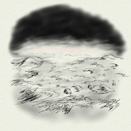

Луна-9
Пётр Косых
Играть онлайн
15 ноября 2043 года пилотируемый космический корабль «Арго-3» успешно достиг орбиты Луны. На 17 дней раньше запланированного срока.
Командир: Борис Громов
Пилот командного модуля: Сергей Чернов
Пилот лунного модуля: Александр Катаев
Миссия: cмена вахты на российско-китайской лунной базе «Луна-9». Выяснение причины пропажи связи с базой, спасение экипажа.
Для игры есть руководство в формате PDF, которое доступно на страничке с полной версией игры.